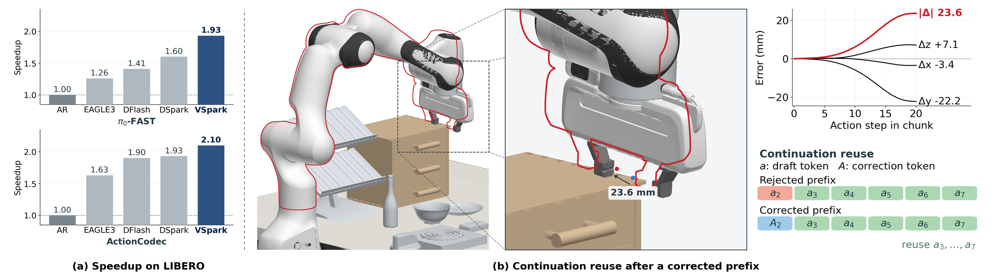
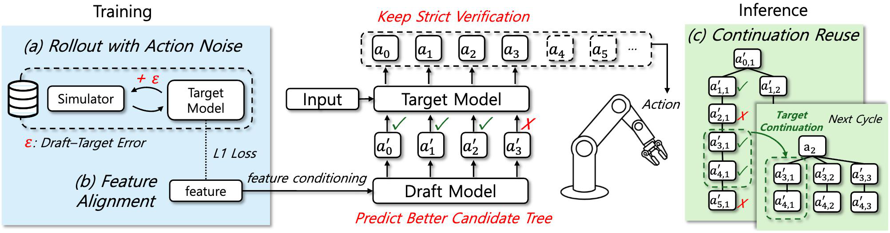
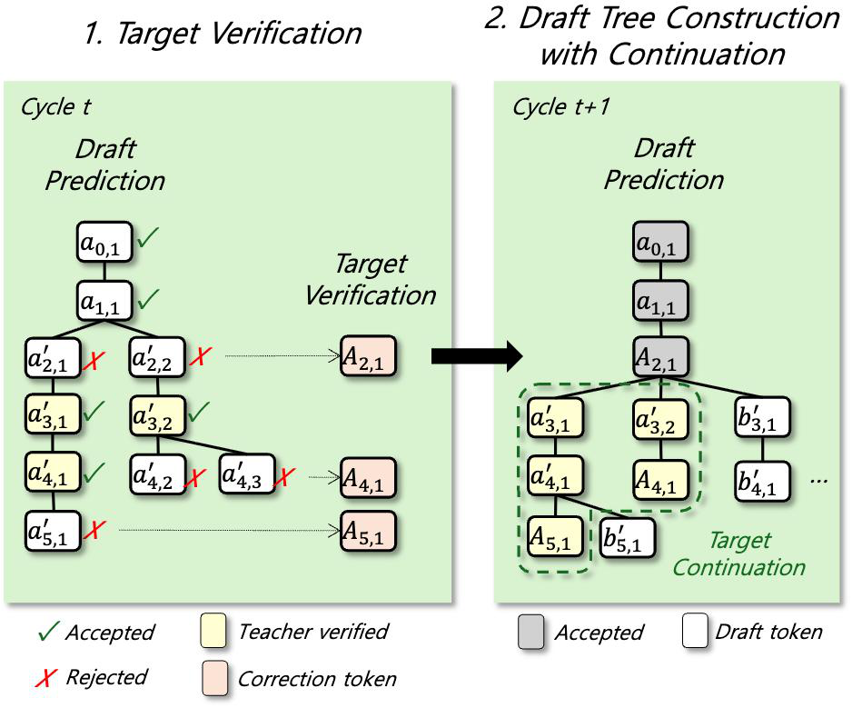

Exact verification, faster decoding

Can speculative decoding be made effective for VLAs with compressed action tokenizers while keeping verification exact?
Autoregressive VLAs pay one large-model forward pass per action token. Speculative decoding drafts several tokens and verifies them in one pass, so decoding remains lossless. For robot actions, near-correct drafts are still rejected, which limits the speedup.
Decoding demo: AR, DSpark and VSpark
A 22-token ActionCodec chunk on LIBERO-Goal, replayed from real decoding traces. One timestep is one target forward pass. After a rejection, DSpark discards the rest of the drafted path, while VSpark saves the target's predictions along it and proposes them in the next pass. In this chunk, all three output the same tokens. Both DSpark and VSpark use tree decoding; only the path through the accepted tokens of each draft tree is shown.
Three design choices on the draft side
VSpark builds on DSpark. It changes how the draft is trained and which candidates are verified, and leaves the target, tokenizer and verification rule unchanged.

Rollouts with calibrated action noise
Roll out the target with action noise and label every visited state with its clean prediction. The noise matches the draft's own action errors.
Feature alignment
Condition the draft on the target's hidden features and regress them alongside cross-entropy. τ on π0-FAST rises from 3.22 to 3.87.
Continuation reuse
Reuse the target's predictions along rejected branches as candidates in the next draft tree. No training and no extra target compute.

Promoting continuations
In cycle t, the target accepts a0,1 a1,1 but rejects both a'2,1 and a'2,2, so it appends its correction A2,1. The same pass also verifies the tokens below the rejected ones. Under a'2,1, a'3,1 a'4,1 match the target and a'5,1 does not, so the target gives A5,1. Under a'2,2, a'3,2 matches and a'4,2, a'4,3 do not, so it gives A4,1. This yields two target continuations, a'3,1 a'4,1 A5,1 and a'3,2 A4,1.
In cycle t+1 the tree starts from A2,1. Both continuations are inserted below it with the top draft score under their parent, next to the draft's own candidates b':
The target re-verifies every inserted token under A2,1, so decoding remains lossless.
Fastest on every model and benchmark
Acceptance length τ and speedup over autoregressive decoding. All methods share the frozen target and exact tree verification; only the draft differs. Single RTX 4090.
Average speedup
Per-suite results
BibTeX
@article{yoo2026vspark,
title = {VSpark: Speculative Decoding for Autoregressive
Vision-Language-Action Models},
author = {Yoo, Suho and Jang, Youngjoon and Cho, Hyebin and
Lee, Taeyeop and Jeong, Jaewook and Chung, Joon Son},
journal = {arXiv preprint arXiv:2611.22666},
year = {2026}
}